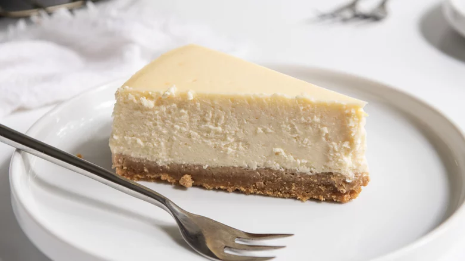

New York Cheesecake

Description
New York cheesecake is a rich, creamy dessert known for its smooth texture and dense yet velvety consistency. The base of the cheesecake is typically made with a graham cracker crust, adding a slightly crunchy, buttery contrast to the soft filling. The filling itself is made from a blend of cream cheese, sugar, eggs, and vanilla extract, with the key ingredient being heavy cream or sour cream to achieve its signature richness. Unlike other cheesecakes, New York cheesecake is often baked at a high temperature for a short period before being finished at a lower temperature, which helps give the cake a beautiful golden top while ensuring it stays moist and creamy inside.
This indulgent dessert is perfect for any special occasion or when you're simply craving a classic sweet treat. The cheesecake is usually baked in a springform pan, which makes for easy release after cooling. Once baked and cooled, it is often left to chill in the fridge to firm up before serving. Whether enjoyed plain or topped with fresh fruit, whipped cream, or a drizzle of caramel or chocolate sauce, New York cheesecake is always a crowd-pleaser with its melt-in-your-mouth texture and decadent flavor.
Ingredients
- 1 1/2 cups graham cracker crumbs
- 1/4 cup granulated sugar
- 1/2 cup unsalted butter (melted)
- 4 (8-ounce) packages cream cheese (softened)
- 1 1/4 cups granulated sugar
- 1 teaspoon vanilla extract
- 4 large eggs
- 2/3 cup sour cream
- 2/3 cup heavy cream
Steps
- Preheat your oven to 325°F (160°C).
- In a medium bowl, mix together 1 1/2 cups graham cracker crumbs, 1/4 cup granulated sugar, and 1/2 cup melted butter until well combined.
- Press the mixture evenly into the bottom of a 9-inch springform pan to form the crust.
- Bake the crust for 8–10 minutes until lightly golden, then set aside to cool while you prepare the filling.
- In a large mixing bowl, beat 4 (8-ounce) packages of softened cream cheese until smooth and creamy, about 2–3 minutes.
- Add 1 1/4 cups granulated sugar and 1 teaspoon vanilla extract, beating until fully combined.
- Add the 4 large eggs, one at a time, mixing on low speed until each egg is just incorporated (do not overmix).
- Add 2/3 cup sour cream and 2/3 cup heavy cream, mixing until smooth and combined.
- Pour the cheesecake filling over the cooled crust, spreading it out evenly.
- Gently tap the pan on the counter a few times to remove any air bubbles.
- Place the springform pan on a baking sheet and bake in the preheated oven at 325°F (160°C) for 1 hour to 1 hour 10 minutes, or until the edges are set and the center is still slightly jiggly.
- Turn off the oven, crack the oven door open slightly, and let the cheesecake cool in the oven for about 1 hour. This helps prevent cracks.
- Once cooled, remove the cheesecake from the oven and let it cool completely at room temperature.
Refrigerate for at least 4 hours (or overnight) before removing from the springform pan.
Serve chilled, plain or with your favorite toppings like fresh fruit, whipped cream, or a drizzle of caramel or chocolate sauce.